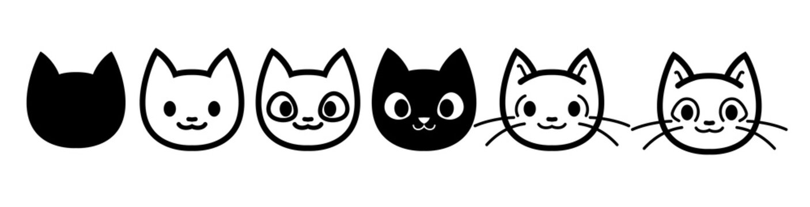
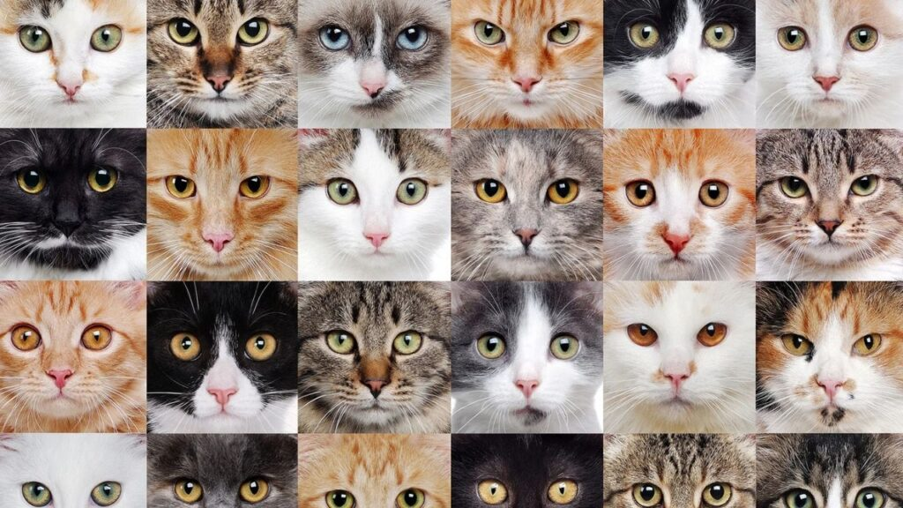

Conheça nossa página

Site de Gatinhos
Este e meu site teste sobre html. falaremos aqui sobre gatinhos
Categorias
- gatos de rua
- gatos de feira
- gatos de fazendda
- gatos de cores diferentes
- perfumes pet
- ração
- coleiras
- medicamentos
Doações
Adote um gatinho por meio de nossa págima ou contribua para a menuntenção deste projeto.
Veterinários
Os melhores veterinários de todo o Estado se encontram aqui
Doutora makusu de Sousa, premiada em pesquisas sobre felinos em situação de rua.
Emergências
Contato para avaliações de urgência e chamadas de emergência qualificada.

Hora de apreciar o incrivel mundo dos gatinhos
Horario e Localização
Estamos localizados na avenida chocolate quente nº345
EStamos abertos de segunda aos sábados de 8:00 a 17:00